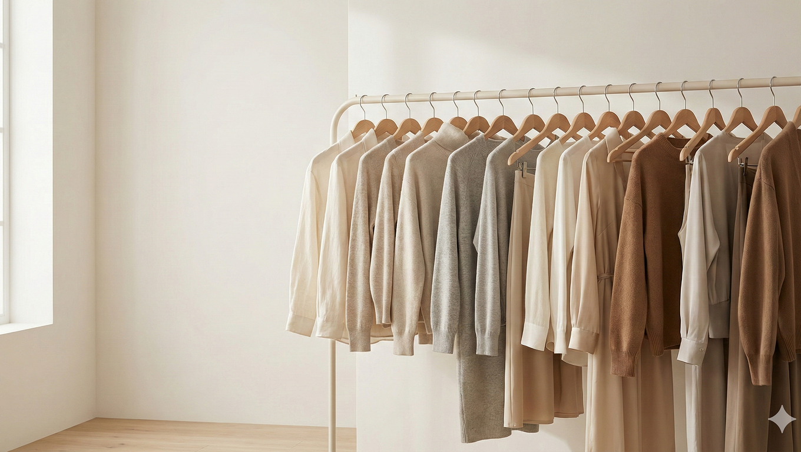
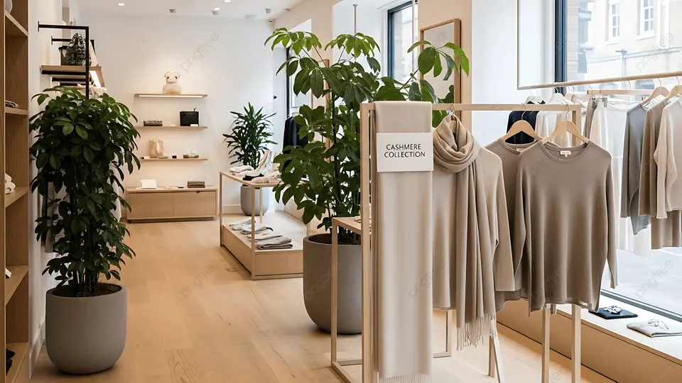
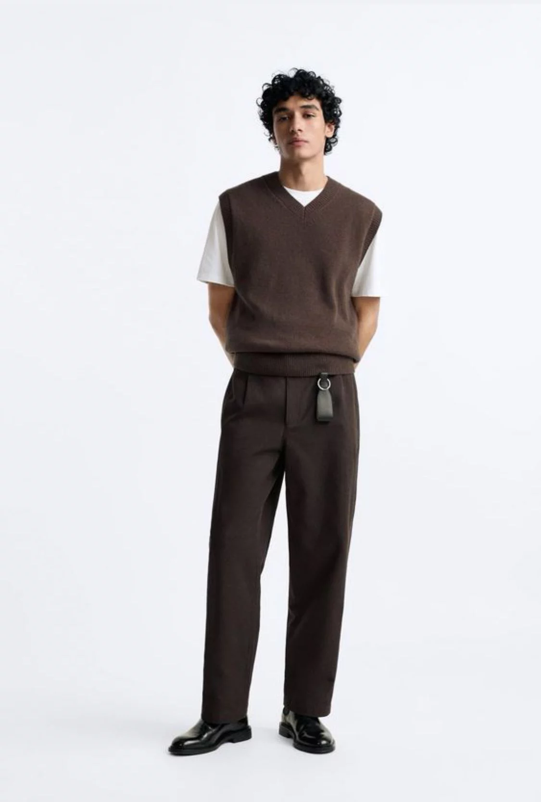

Top Trending Category



Women Fashion Trends
We present to you .
This homepage keeps the same exported KNN recommendation feature, but it is now presented with the visual structure and editorial feel of the older fashion website you shared.
Soft Tailoring
Clean portrait styling inspired by the original storefront.

Neutral Edit
Warm studio tones and elevated basics across the homepage.
Statement Contrast
Sharper fashion imagery while the recommendation system stays intact.
Project Snapshot
Notebook outputs translated into a storefront-style layout
Kaggle product dataset used as the starting point for cleaning and feature engineering.
Measured against engineered trend labels, not customer ground-truth labels.
Chosen during model selection in the notebook pipeline.
Highest-scoring category from the exported recommendation data.
Trending Section
Recommended products from the export
WEAR YOUR STORY
Trend Finder
Choose age group and occasion to see the closest recommendation match
Recommended Style
High Trend
Tops
This recommendation comes from the exported notebook output for the selected profile.
Style Impact
Partial Style Match
Some of the top-ranked items align with the selected style preference, while the final order still reflects the overall recommendation score.
Age Group
Teen Girls (13-19)
Occasion
Casual
Derived Trend Score
0.90
Style Preference
No specific preference
Project Notes
`trend_label` is engineered from scoring rules, so the metric should be explained as accuracy on derived labels.
The site reads precomputed JSON files, so it works on GitHub Pages without a live Python backend.
KNN was chosen because it is easier to explain, similarity-based, and suitable for a student project demonstration.

To match GitHub Pages locally, the `web/` folder should be served through localhost instead of opening the HTML file directly.

`trend_label` is engineered from scoring rules, so the metric should be explained as accuracy on derived labels.
The site reads precomputed JSON files, so it works on GitHub Pages without a live Python backend.
Age Edit
Recommendations grouped by age segment
Occasion Edit
Recommendations grouped by occasion
Shop